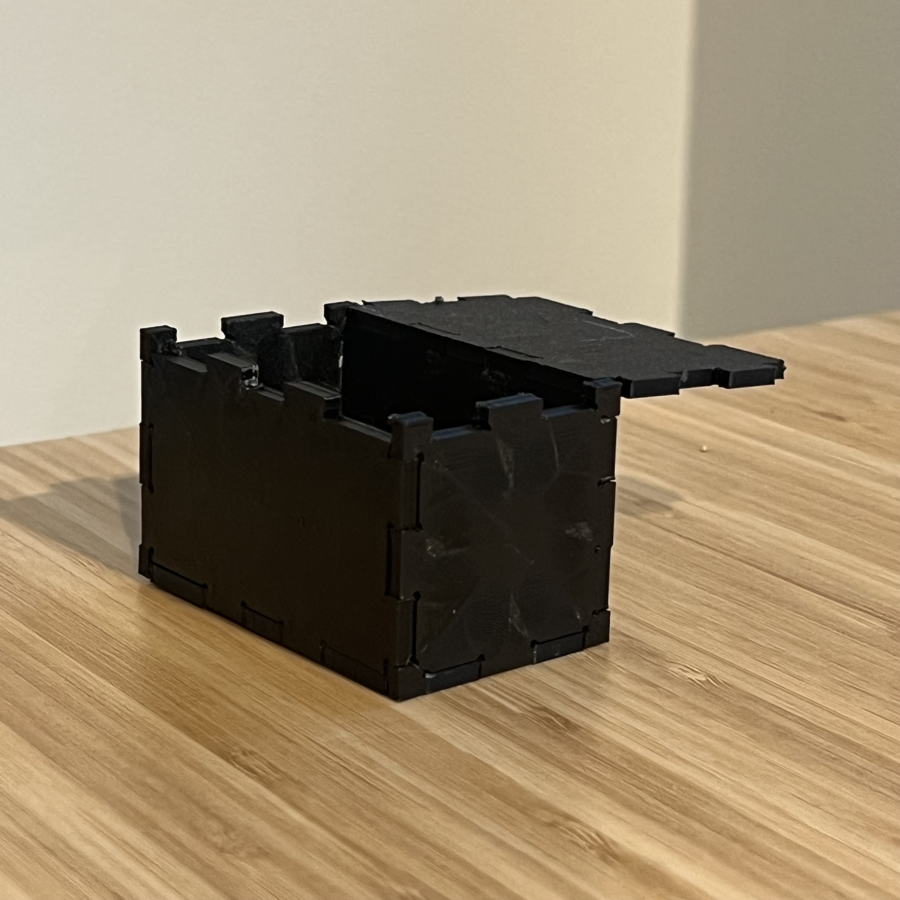
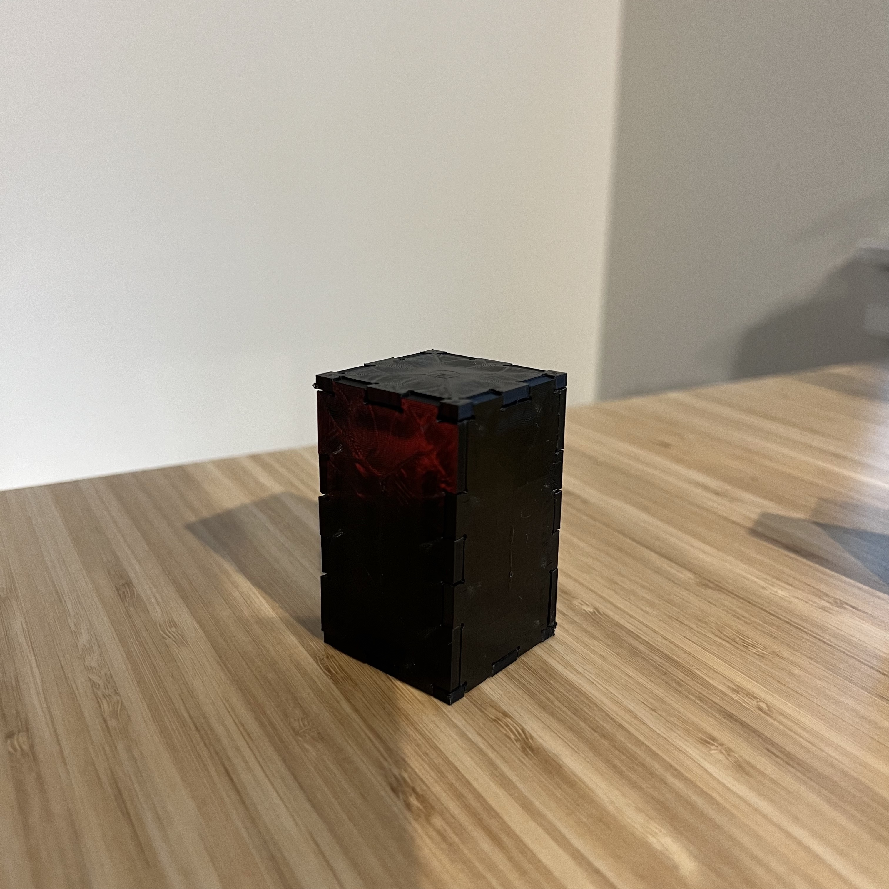
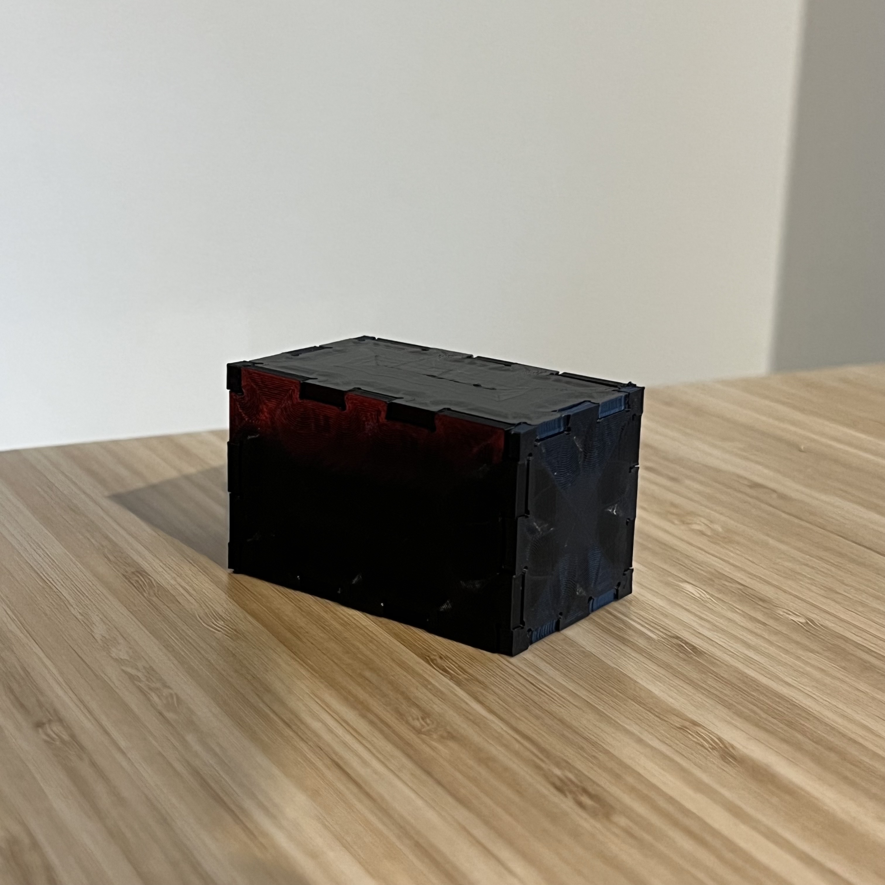

← Back to Clark's Digital Fabrication Portfolio
A4: Subtractive Manufacturing
Last updated: Mon, Oct 31, 2022
For this assignment, I fabricated and constructed a physical box made up of flat panels
with sides that snap to each other using boxjoints and dogbones for a tight interference fit.
---
I. Testing out boxjoints
I started off with designing and printing low quality boxjoints to test fit.
Through a process of trial-and-error, I considered the following test criteria:
- Panel depth — is the structure thick enough to snap without bending?
- Dogbone size — do the insertion slots provide enough wiggle room?
- Wall thickness — are the edges thin enough to not interfere with the slots and dogbones?

Some testing observations:
At first, I extruded my panel curves to 1.5mm (nearly the same depth as the FR1 panels others were using for milling)
but I realized that size translates poorly to 3D printed PLA because its thinness causes it to bend and warp easily.
I doubled the extrusion for a 3mm panel depth.
For dogbones, I started off with a radius of 0.4mm but realized these were too small and were unnoticeable.
I doubled the dogbone size with a 0.8mm radius.
Wall thickness was tricky because too much of it can get entangled with the dogbones and insertion slots, while
too little of it can cause the structure to collapse altogether (causing a few failed prints and wasted PLA).
I found a sweet spot for a .4mm wall thickness and single wall line count.
With these new settings, I created boxjoints that were tight when pressed together with just the right amount of wiggle room.


---
II. Designing and printing flat panels
I started off with a 40mm x 40mm square with two boxjoints on each side that were 10mm wide and 3mm deep with .8mm dogbones.
I designed around this initial square model with 60mm wide rectangle variations for the sides and top/bottom.
I printed out the 2 squares and 2 rectangles that had a 40mm height, pieced them together, then measured the space between the
two pieced rectangles to determine the height of the other 2 rectangles to be pieced perpendicularly.


---
III. Constructing the box
After more testing and iterating through a few low quality prints to ensure that they'd piece together,
I printed out all flat panels in super quality and constructed the box.


 
Here are my files:
← Back to Clark's Digital Fabrication Portfolio